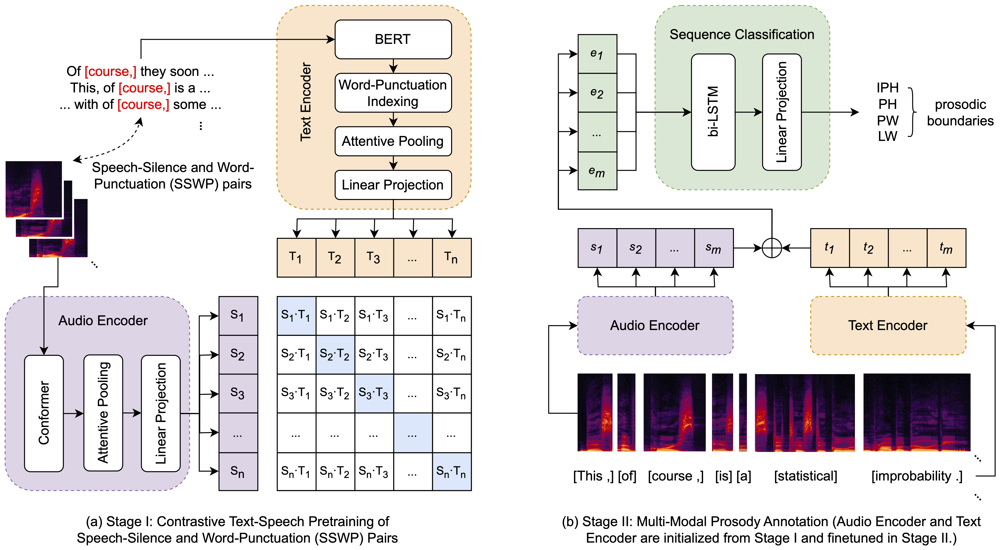
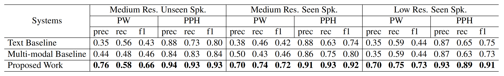
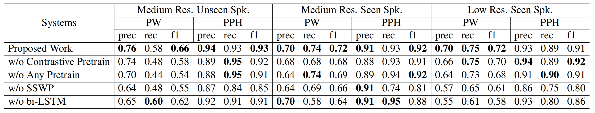
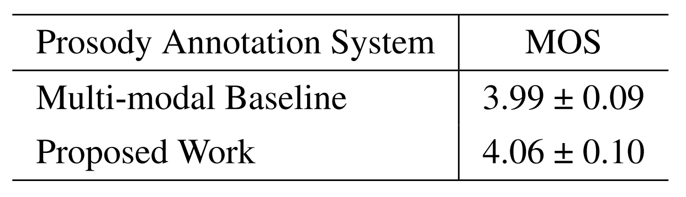
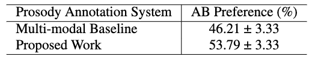

In the realm of expressive Text-to-Speech (TTS), explicit prosodic boundaries significantly advance the naturalness and controllability of synthesized speech. While human prosody annotation contributes a lot to the performance, it is a labor-intensive and time-consuming process, often resulting in inconsistent outcomes. Despite the availability of extensive supervised data, the current benchmark model still faces performance setbacks. To address this issue, a two-stage automatic annotation pipeline is novelly proposed in this paper. Specifically, in the first stage, we propose contrastive text-speech pretraining of Speech-Silence and Word-Punctuation (SSWP) pairs. The pretraining procedure hammers at enhancing the prosodic space extracted from joint text-speech space. In the second stage, we build a multi-modal prosody annotator, which consists of pretrained encoders, a straightforward yet effective text-speech feature fusion scheme, and a sequence classifier. Extensive experiments conclusively demonstrate that our proposed method excels at automatically generating prosody annotation and achieves state-of-the-art (SOTA) performance. Furthermore, our novel model has exhibited remarkable resilience when tested with varying amounts of data.
The Architecture of Our Proposed Work

Objective Evaluation
The results of our proposed work, compared with previous benchmarks, are shown below.

Ablation Studies
We conduct extensive ablation studies to prove the efficacy of each module in our proposed work, as shown below.

Subjective Evaluation
We conduct the mean opinion score (MOS) and AB Preference evaluation on an open-source corpus of unseen speaker, LJSpeech, using the Multi-modal Baseline and Proposed Work to annotate the prosodic boundaries of the entire corpus automatically. Both systems are trained using FastSpeech 2 and Hifi-GAN. 10 native speakers are asked to score 20 utterances from each system. Our proposed work achieves a MOS gain of 0.07 and a 11.1% preference compared with the previous benchmark.


Here are part of the speech for MOS test. Besides speech generated by the two TTS systems mentioned above, we also give the raw speech recorded by human, the text, and predicted prosody for reference.
Samples Demo
Demo1
LJ047-0165
Text
At the end of the interview, Marina Oswald came into the room, when he observed that she seemed, quote, quite alarmed, end quote, about the visit.
Prosody
At the end of the interview, [PW] Marina Oswald came into the room, [PPH] when he observed that she seemed, [PW] quote, [PW] quite alarmed, [PW] end quote, [PW] about the visit. [IPH]
Multi-modal Baseline
Proposed Work
Ground Truth
Demo2
LJ002-0227
Text
Absence or neglect of divine service, were present as in the King's Bench, but in an exaggerated form.
Prosody
Absence or neglect of divine service, [PPH] were present [PW] as in the King's Bench, [PPH] but [PPH] in an exaggerated form. [IPH]
Multi-modal Baseline
Proposed Work
Ground Truth
Demo3
LJ006-0028
Text
Mister Crawford was thoroughly versed in the still imperfectly understood science of prison management, and fully qualified for his new duties.
Prosody
Mister Crawford was thoroughly versed [PW] in the still imperfectly understood science of prison management, [PPH] and fully qualified [PW] for his new duties. [IPH]
Multi-modal Baseline
Proposed Work
Ground Truth
Demo4
LJ006-0140
Text
Evidence was given before the inspectors of eight or ten prisoners seen giddy drunk, not able to sit upon forms.
Prosody
Evidence was given before the inspectors of eight or ten prisoners [PW] seen [PW] giddy drunk, [PPH] not able to sit upon forms. [IPH]
Multi-modal Baseline
Proposed Work
Ground Truth
Demo5
LJ007-0121
Text
There were no restraints, cards and backgammon were played, and the time passed in feasting and revelry.
Prosody
There were no restraints, [PPH] cards and backgammon were played, [PPH] and the time passed in feasting and revelry. [IPH]
Multi-modal Baseline
Proposed Work
Ground Truth
Demo6
LJ013-0191
Text
All this was evidence sufficient to warrant Courvoisier's committal for trial;
Prosody
All [PW] this was evidence sufficient to warrant Courvoisier's committal for trial; [IPH]